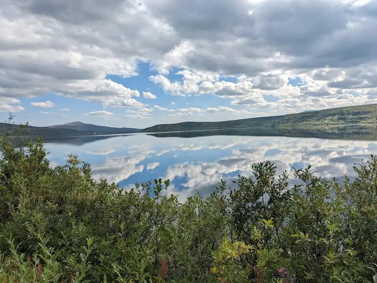

My favorite city is North Pole, Alaska. It is in the heart of the state of Alaska and has more moose than people. North Pole has my favorite things like mountains, glaciers, wildlife, fireweed, and very few people. The aurora borealis in winter are mystical and magical to see dancing in the sky. The summers are filled with wild berry picking, salmon fishing, river rafting, hiking, camping, and whatever other adventure you are willing to take.
